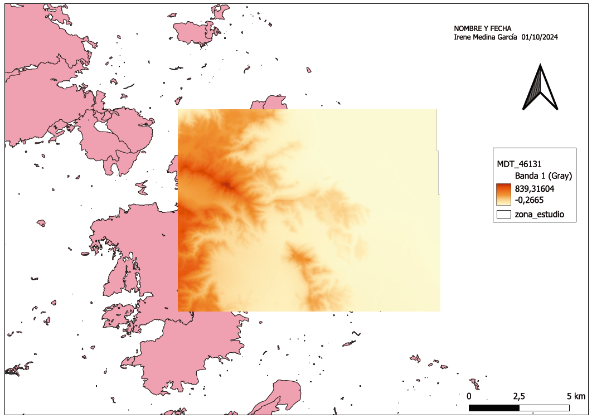
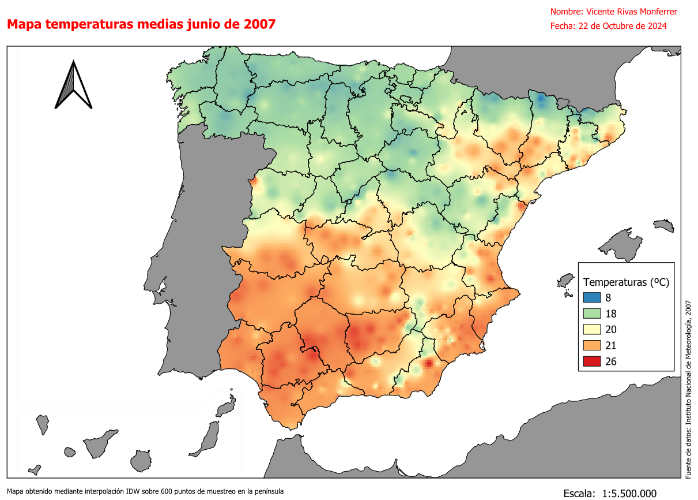
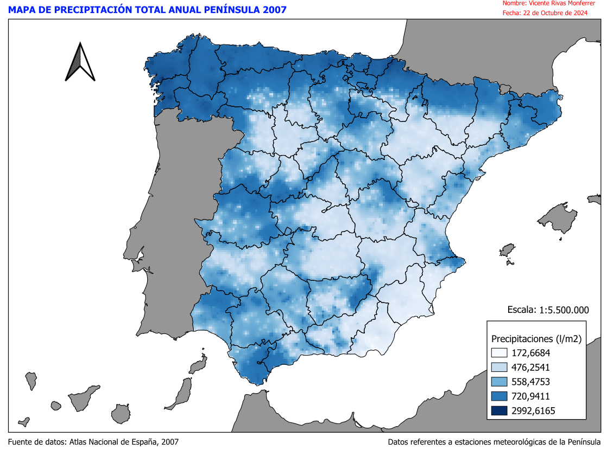
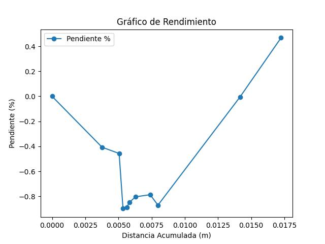

Práctica 1
Introducción a QGIS
Práctica 1
Esta práctica tiene como objetivo realizar una introducción general al software QGIS. Se describirán la estructura de este programa, herramientas y operaciones básicas que servirán como punto de partida a los usuarios que se inicien en la utilización de los Sistemas de Información Geográfica.
Descargar enunciado Descargar resultado en png
 El archivo se está descargando 🚀
El archivo se está descargando 🚀
Práctica 3
Mapa de temperaturas y precipitaciones
Práctica 3
En esta práctica se introducirá en las herramientas para la realización de mapas temáticos de tipo coropletas mediante métodos de interpolación de superficies. Se crearán dos mapas, uno de temperaturas medias del mes de junio y otro de pluviometría anual en España.
Descargar enunciado   Descargar Temperaturas.pdf Descargar Precipitaciones.pdfPráctica 4
Capa Zonas Válidas
Práctica 4
En esta práctica se va a utilizar el programa QGis como herramienta de ayuda en la toma de decisiones para realizar actuaciones de carácter territorial. En este caso, se quiere determinar las zonas más aptas, para ubicar una zona protegida del Lobo Ibérico, en la Comunidad de Castilla y León. Para ello, se combinarán linealmente diferentes variables geográficas reclasificadas: Lluvias, Temperaturas y Alturas junto con otros con-dicionantes poblacional y de superficie.
Descargar enunciado Descargar fichero .shpPráctica 7
Tabla de resultados y gráfico de rendimiento
Práctica 7
En esta práctica se realizará un análisis de rendimiento a partir de un fichero GNSS con waypoints en formato GPX. El resultado a obtener será: Un Dataframe en formato HTML con los siguientes campos: 'Punto', 'Latitud', 'Longitud', 'Cota (m)', 'Hora', 'Distancia (m)', 'Dist_O (m)', 'Pendiente (%)', 'Velocidad (km/h)', 'Orientación (º)', 'Tiempo'; un gráfico con los valores de distancia en el eje X y valores de pendiente y velocidad en la Y; y un Mapa interactivo.
Descargar enunciado | Punto | Latitud | Longitud | Cota (m) | Hora | Distancia (m) | Dist_O (m) | Pendiente (%) | Velocidad (km/h) | Orientación (º) | Tiempo | |
|---|---|---|---|---|---|---|---|---|---|---|---|
| 0 | 1 | 38.968484 | -0.148688 | -6.848 | 2020-10-06T15:42:19Z | 0.000000 | 0.000000 | 0.000000 | 0.000000 | 0.000000 | 0.0 |
| 1 | 2 | 38.967718 | -0.150631 | 5.751 | 2020-10-06T15:44:55Z | 0.003768 | 0.003768 | -0.407022 | 0.000087 | 1.563915 | 156.0 |
| 2 | 3 | 38.967415 | -0.151293 | 3.847 | 2020-10-06T15:45:44Z | 0.001284 | 0.005051 | -0.456581 | 0.000030 | 1.562807 | 156.0 |
| 3 | 4 | 38.965885 | -0.151144 | 4.562 | 2020-10-06T15:47:40Z | 0.000294 | 0.005345 | -0.897440 | 0.000007 | 1.393446 | 156.0 |
| 4 | 5 | 38.965216 | -0.150998 | 5.601 | 2020-10-06T15:48:45Z | 0.000284 | 0.005629 | -0.887325 | 0.000007 | 1.490985 | 156.0 |
| 5 | 6 | 38.965000 | -0.150899 | 4.004 | 2020-10-06T15:49:00Z | 0.000192 | 0.005821 | -0.847777 | 0.000004 | 1.532732 | 156.0 |
| 6 | 7 | 38.964634 | -0.150661 | 4.727 | 2020-10-06T15:49:42Z | 0.000462 | 0.006283 | -0.803183 | 0.000011 | 1.543961 | 156.0 |
| 7 | 8 | 38.963839 | -0.150091 | 7.208 | 2020-10-06T15:51:12Z | 0.001106 | 0.007388 | -0.786106 | 0.000026 | 1.546457 | 156.0 |
| 8 | 9 | 38.962955 | -0.150394 | 9.550 | 2020-10-06T15:52:27Z | 0.000588 | 0.007977 | -0.869653 | 0.000014 | 1.519917 | 156.0 |
| 9 | 10 | 38.962942 | -0.147204 | 1.780 | 2020-10-06T15:56:15Z | 0.006186 | 0.014162 | -0.004717 | 0.000143 | 1.570725 | 156.0 |
| 10 | 11 | 38.963695 | -0.145611 | 2.238 | 2020-10-06T15:58:20Z | 0.003089 | 0.017252 | 0.467526 | 0.000071 | 1.579047 | 156.0 |
Práctica 8
Contenedores y Accidentes de Madrid
Práctica 8
En esta práctica se realizará el estudio de la accidentalidad de la ciudad de Madrid mediante mapa de calor y puntual.
Descargar enunciadoPráctica 9
Imágenes GeoTIFF obtenidas del cálculo de los índices SAVI y EVI
Práctica 9
Crearemos un mapa de Indice de Vegetación Mejorado (EVI) con imágenes LANDSAT 8 de la evolución del incendio anterior, y un mapa de Indice de Vegetación ajustado al suelo (SAVI) con imágenes SENTINEL 2A de la evolución del incendio ocurrido en Montitxelvo el 2/11/2023
Descargar enunciadoPráctica 10
Imágenes GeoTIFF del índice calculado
Práctica 10
Se calculará el Indice con las imágenes satélite de 2 plataformas para un periodo de tiempo establecido y un lugar de estudio, en función del grupo de estudio asignado. Se realizará un WebMap con las 2 capas resultantes, aplicando la rampa de colores índicada anteriormente y se exportará en formato Geotiff, al Drive del grupo, las imagenes correspondientes a las zonas de estudio indicadas.
Descargar enunciado